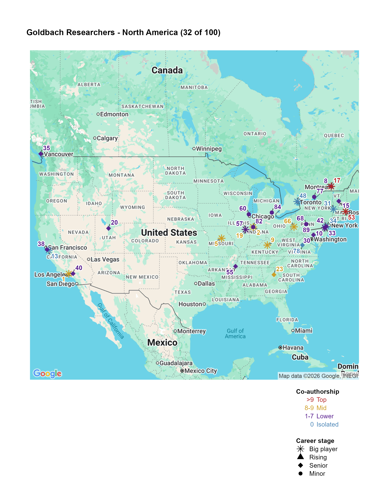

North America
Top 100 researchers based in North America
33 Top 100 researchers are based in North America.

Listing
| Rank | Name | Institution | Country |
|---|---|---|---|
| 1 | Terence Tao | University of California, Los Angeles | US |
| 2 | Trevor D. Wooley | Purdue University West Lafayette | US |
| 5 | William D. Banks | University of Missouri | US |
| 8 | Andrew Granville | Université de Montréal | CA |
| 9 | Xuancheng Shao | University of Kentucky | US |
| 10 | Jean Bourgain | Institute for Advanced Study | US |
| 13 | D. A. Goldston | San Jose State University | US |
| 15 | Carl Pomerance | Dartmouth College | US |
| 17 | Chantal David | Concordia University | CA |
| 19 | Alexandru Zaharescu | University of Illinois Urbana-Champaign | US |
| 20 | Roger Baker | Brigham Young University | US |
| 23 | Paul Pollack | University of Georgia | US |
| 30 | Angel Kumchev | Towson University | US |
| 31 | Steven J. Miller | Williams College | US |
| 32 | Jared Duker Lichtman | Stanford University | US |
| 33 | Will Sawin | Princeton University | US |
| 34 | Henryk Iwaniec | Rutgers, The State University of New Jersey | US |
| 35 | Greg Martin | University of British Columbia | CA |
| 38 | K. Soundararajan | Stanford University | US |
| 40 | Stephan Ramon Garcia | Pomona College | US |
| 42 | Alex Kontorovich | Rutgers, The State University of New Jersey | US |
| 48 | John Friedlander | University of Toronto | CA |
| 53 | Robert J. Lemke Oliver | Tufts University | US |
| 55 | Tsz Ho Chan | University of Memphis | US |
| 57 | Nicolas Robles | University of Illinois Urbana-Champaign | US |
| 60 | Maksym Radziwiłł | Northwestern University | US |
| 66 | Theresa C. Anderson | Carnegie Mellon University | US |
| 68 | R. C. Vaughan | Pennsylvania State University | US |
| 77 | M. Ram Murty | Queen's University | CA |
| 78 | H. J. Weber | University of Virginia | US |
| 82 | Daniel Shanks | Purdue University West Lafayette | US |
| 84 | Hugh L. Montgomery | University of Michigan | US |
| 89 | Peter Sarnak | Princeton University | US |